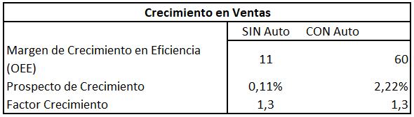
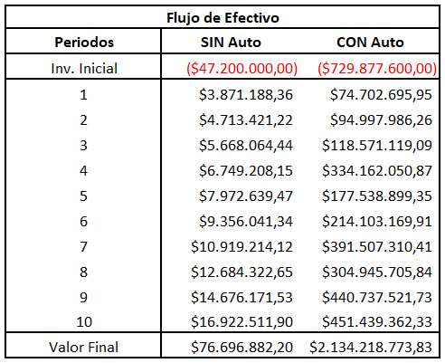
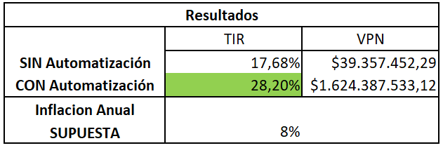
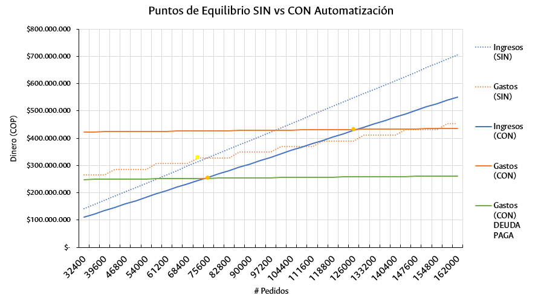

Evaluación Económica
La evaluación económica del proyecto de automatización partió de dos escenarios:
- Un primer escenario en el cual la planta se realiza sin automatización, para lo cual se inicia el negocio tal y como se desarrollaría una clasificadora y distribuidora de paquetería usualmente.
- Un segundo escenario donde, en vez de iniciar el proyecto como un centro de distribución de paquetería normal, se realiza directamente automatizado.
Cabe aclarar que partimos de que no se tiene capital inicial y se recurre a una deuda para financiar el proyecto.
Siendo así primero definimos los datos esenciales a tener en cuenta. En este caso son: el precio del dólar, la inflación esperada, los impuestos, la inflación anual y una empresa que figura como competencia a partir de la cual realizaremos cálculos más adelante.
Ingresos y Egresos
Una vez dados los datos básicos entramos a detallar los ingresos y egresos de cada uno de los casos dividiendo los de la siguiente forma:
Costo de inicial
Este es el valor el cual debemos invertir inicialmente para poder poner en marcha el proyecto. En el caso de la planta no automatizada incluiría las estanterías para el almacenamiento, mobiliario, vinculación de contratos de los empleados, computadores, capacitaciones y adecuación de la bodega que se va a tomar en arriendo. En el caso de la planta automatizada se tienen en cuenta el software, la maquinaria que se detallada en el BOM, el valor de transporte, instalación configuración y demás de la misma; la comisión a los ingenieros, es decir a nosotros, quiénes estamos brindando la solución de automatización y demás costes como la adecuación de bodega, computadores, etc, que ya se mencionaron anteriormente.
Cabe resaltar que el costo inicial del proyecto automatizado es evidentemente mucho más alto que el que no implica automatización. Principalmente por el costo de la maquinaria, el software y la implementación del mismo, que corresponden a más de la mitad del costo inicial. Sin embargo, más adelante veremos que se paga con creces a lo largo del tiempo.
Costos Fijos
Son aquellos en los que incurre la empresa anualmente, sin importar el número de pedidos realizados. Estos no varían mucho entre uno u otro modelo. Cabe destacar que en general son los siguientes: Pagos a empleados, consumibles, servicios públicos, una cuota de la deuda que se tomó y el arriendo de local. Adicionalmente en el caso de automatización se añade el mantenimiento de la maquinaria. En este punto es importante resaltar que el coste fijo de la planta automatizada es menor que aquella sin automatizar, ya que el salario de los operarios es gran parte del costo fijo y por supuesto se requieren muchos más operarios en la planta sin automatizar. Sin embargo la cuota de la deuda que se toma contrarresta este efecto, pues debido al alto costo inicial del proyecto automatizado la cuota es bastante alta e iguala los costos fijos.
Costos Variables
Son aquellos que dependen del número de productos que se venden o de servicios que se entreguen, en este caso según el número de pedidos. Aquí el único costo variable que asumimos fue el gasto en electricidad. Pues en el caso de la planta automatizada entre más pedidos más potencia consume la maquinaria. No obstante este costo es relativamente bajo.
Ingresos
Provienen únicamente de la cantidad de pedidos que se realizan y del costo de cada uno de ellos. Resaltamos que los pedidos realizados en la planta automatizada son mucho mayores que aquellos en la planta no automatizada, aproximadamente el doble.
Crecimiento en Ventas
Finalmente tuvimos en cuenta un crecimiento anual de ventas. El cual depende del porcentaje que se pueda mejorar en el OEE y según la diferencia de precios que se tenga con la competencia. En este caso entre más barato ofrezca yo mi pedido respecto a la competencia voy a tener un mayor crecimiento. Adicionalmente se tiene en cuenta que, por ejemplo, en la planta automatizada se puede aumentar la velocidad del robot y en gran medida la producción, a diferencia de una planta sin automatizar, en la cual los operarios tienen poco margen de aumento de productividad sin consecuencias negativas.

Deuda
Una vez obtenidos los ingresos y egresos de cada uno de nuestros modelos se realizó un modelo de la deuda que se tomará en cada uno de los casos. Por lo cual tomamos la tasa de interés del préstamo de Bancóldex, que tiene en cuenta la inflación y una tasa según el negocio, y a partir de la misma calculamos las cuotas fijas para un interés compuesto de cada préstamo.
Estado de Resultados Integral
A continuación vemos la parte más importante de nuestra evaluación económica, el estado de resultados integral. En este se desglosa el estado financiero de cada modelo año por año en donde se tienen en cuenta ventas, egresos, depreciaciones de activos, amortizaciones de deuda, gastos, intereses e impuestos. De lo cual obtenemos la utilidad neta de cada año, teniendo en cuenta la reserva legal del 10% y unos dividendos que se pagan a los accionistas.
TIR y VPN
Finalmente en los flujos de efectivo tenemos el resumen de todo el análisis económico que se realizó. Obteniendo así los flujos de dinero de cada uno de los proyectos en donde se tomó en cuenta la inversión inicial, las utilidades netas de cada periodo y un valor final obtenido de los activos qué pueden ser recuperados y de las utilidades retenidas.

Acá observamos cómo, si bien la planta sin automatizar tiene una TIR aceptable de casi 8 puntos por encima de una inflación esperada para este año, la propuesta de automatización tiene una TIR de 20 puntos porcentuales por encima de la inflación. De lo cual obtenemos rendimientos mucho mayores en la segunda opción. Además vemos cómo, a pesar de la enorme inversión inicial en la que se incurre, año a año los flujos de efectivo van aumentando en mayor medida que la planta sin automatizar gracias a que con este modelo podemos dar precios más bajos y realizar un mayor número de pedidos.

Punto de Equilibrio
Adicionalmente se realizó un estudio del punto de equilibrio para cada uno de los casos que se ve sintetizado en la siguiente gráfico:

Acá podemos ver cómo la planta sin automatizar tiene un punto de equilibrio con un número de pedidos menor que el de la planta automatizada debido al elevado costo inicial, qué conlleva a una cuota de la deuda bastante alta. Sin embargo observamos que, una vez se pague esta deuda, el punto de equilibrio de la planta automatizada es bastante cercano al de la planta sin automatizar, por lo cual consideramos que son en este ámbito bastante cercanos.